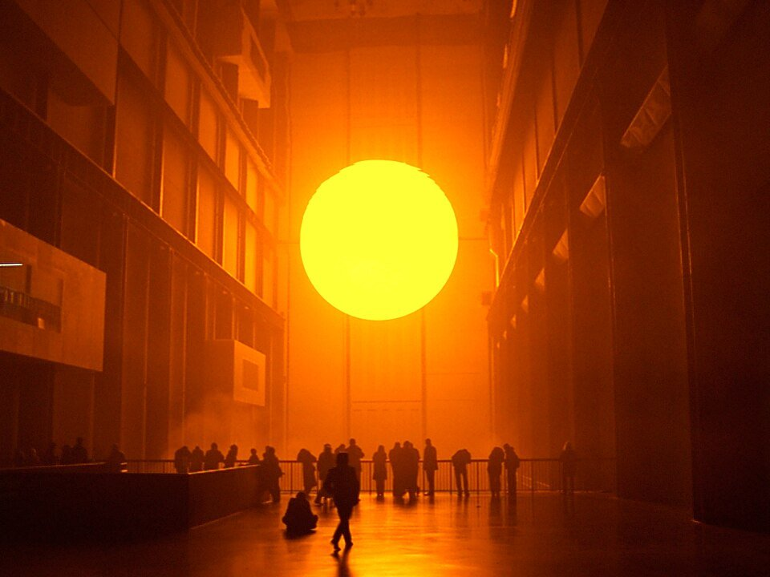

The Weather Project
Olafur Eliasson · 2003 · Installation: a semicircular light under a mirrored ceiling
In copyright. Look and learn: shown for study, not for download. · Photo: wonderferret, CC BY 2.0
The sun was a semicircle hung beneath a mirrored ceiling, which turned it into a full circle and reflected the people lying on the floor below. Olafur Eliasson installed it in the Turbine Hall of Tate Modern in 2003, for the Unilever series, the same year he represented Denmark at the Venice Biennale. It was open for six months and reportedly drew two million visitors, many of them more than once. Eliasson was thirty-six and had run his studio in Berlin since 1995.